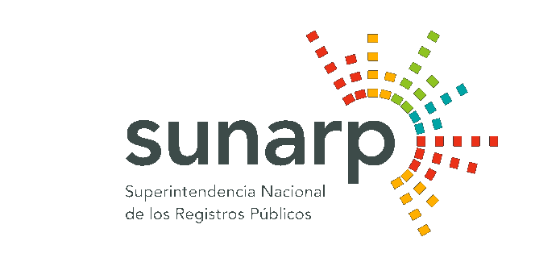
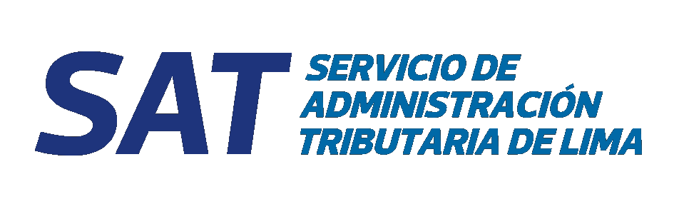
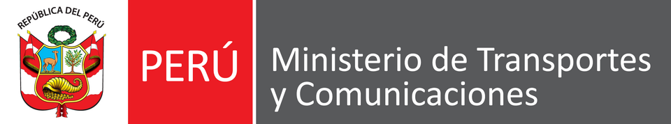
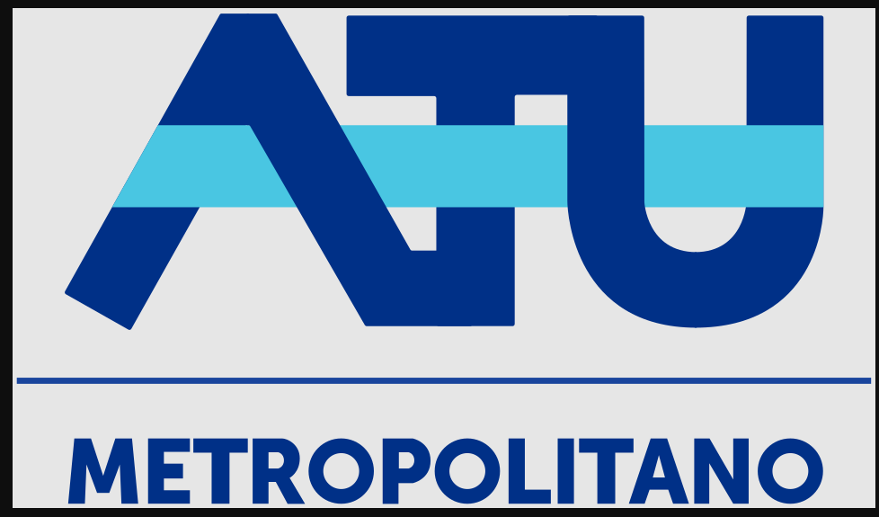
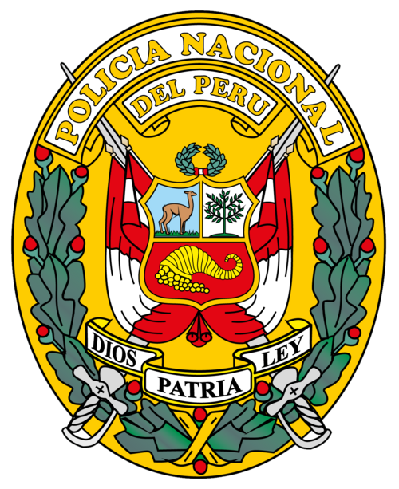

01
Ingresa la placa
Escribe la placa una sola vez en el buscador principal. Se guarda solo en tu navegador mientras usas la página.
Toda la información de un vehículo en un solo lugar.
Consulta datos oficiales de SUNARP, SOAT, SAT, SUTRAN y más en segundos.
✓ Placa copiada. Selecciona un módulo para continuar.
AutoRadar te conecta con las fuentes oficiales del Perú. Sin intermediarios, sin almacenar tus datos.
Escribe la placa una sola vez en el buscador principal. Se guarda solo en tu navegador mientras usas la página.
Accede a datos generales, propietarios, SOAT, revisión técnica, papeletas o índice de riesgo.
Te llevamos directo al portal del Estado o la aseguradora correspondiente para completar tu consulta.
Cada tarjeta abre la fuente oficial correspondiente. Información clara, organizada y al instante.
Marca, modelo, año, color y estado de inscripción registral del vehículo.
Verifica si el vehículo cuenta con el permiso vigente de la PNP para circular con lunas polarizadas.
Historial de dueños anteriores, embargos y gravámenes registrados en SUNARP.
Registro de cambios de titularidad, inscripciones y trámites de transferencia vehicular.
Estado del seguro obligatorio, aseguradora activa y fecha de vencimiento.
Estado de la última inspección técnica vehicular (CITV) y próximo vencimiento.
Verifica la vigencia del certificado de conversión a gas natural vehicular y su inspección anual.
Infracciones de tránsito pendientes o pagadas en SAT, SUTRAN y ATU.
Consulta el valor referencial de mercado de tu vehículo según marca, modelo y año.
Evaluación consolidada del vehículo basada en historial, multas, gravámenes y estado documental.
Recomendaciones esenciales para tomar una decisión informada y segura.
Un SOAT al día solo indica que puede circular legalmente. Revisa también propietarios, gravámenes y papeletas.
Las multas impagas siguen ligadas a la placa. Confirma en SAT, SUTRAN y ATU antes de firmar.
Si hay prenda vehicular o crédito activo en SUNARP, no podrás inscribir la compra hasta levantarlo.
Un CITV vencido o cilindro de gas caducado impiden circular legalmente y recargar combustible.
Entra a SPRL de SUNARP, inicia sesión con tu DNI (clave SOL o registro rápido), busca por placa y revisa la partida registral: ahí aparecen los dueños anteriores, embargos y gravámenes vigentes.
No. Tu placa se queda solo en tu navegador mientras usas esta página. Cuando un módulo requiere DNI, lo ingresas directo en el portal oficial.
Cada entidad decide qué información es pública y cuál requiere verificar tu identidad. AutoRadar solo te lleva al lugar correcto.
No. Somos un directorio que organiza fuentes oficiales para agilizar tu consulta. No reemplazamos a SUNARP, SAT, SUTRAN ni APESEG.
Mientras esta página esté en fase de prueba, el uso es gratuito. Algunas fuentes oficiales pueden tener su propio costo por reporte.





Parque Zeus, Urb. Olimpo, Salamanca — Lima, Perú.